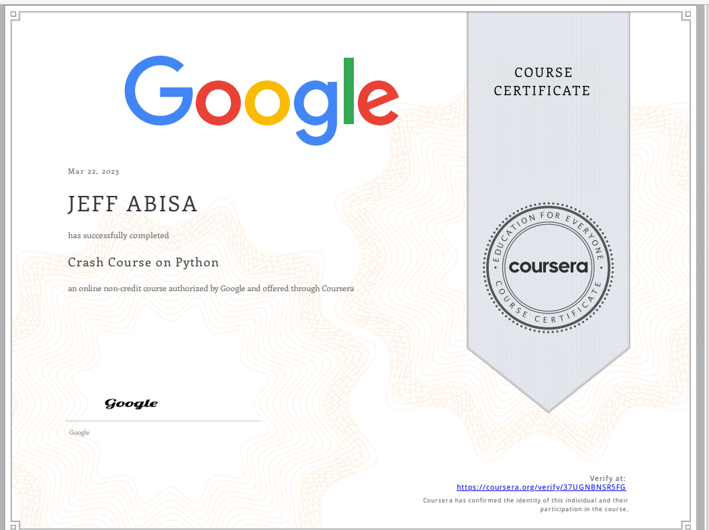

Professional Journey
Throughout my academic and professional journey, my career plans have remained steadfastly focused on computer networking. This unwavering commitment stems from a deep-rooted passion for technology and networking that has been a cornerstone of my educational experience at Gateway Community College. From the outset, the complexities and essential role of computer networks in modern communication and business operations captivated me, and this fascination has only grown stronger with each passing year.

As I progressed through my coursework, my perspective on my career evolved to encompass a broader understanding of the skills and certifications necessary for excellence in computer networking. Initially, my goal was to build a solid foundation through my studies. However, I soon realized the critical importance of professional certifications and continuous learning to keep pace with technological advancements. This insight has driven me to pursue additional certifications and consider further education to enhance my career prospects and professional development.
Recently, I earned my CompTIA A+ certification, a milestone that has significantly influenced my career trajectory. This certification not only validated my technical skills but also provided a clear pathway for future certifications. With this achievement, I am now setting my sights on obtaining the CCNA (Cisco Certified Network Associate) and CompTIA Security+ certifications. Furthermore, I plan to embark on a master’s degree in business administration (MBA) this fall. I believe that combining technical expertise with business acumen will equip me with the skills necessary for leadership roles in the technology sector.
Additionally, I have completed the "Crash Course on Python" certification from Google. This certification has further strengthened my programming skills, especially in Python, and has provided me with valuable insights into efficient coding practices and problem-solving techniques.

In terms of course outcomes, I have successfully achieved several key milestones. These include establishing a strong foundation in computer science principles and practices, developing proficiency in programming and software development, acquiring practical skills in network configuration and troubleshooting, and completing projects that integrate theoretical knowledge with real-world applications. These accomplishments have been pivotal in shaping my professional journey and preparing me for future challenges and opportunities in the field of computer networking.
This journey has been one of continuous learning and growth, driven by a passion for technology and a commitment to excellence. As I look to the future, I remain dedicated to advancing my skills and knowledge, aiming to make significant contributions to the field of computer networking and beyond.